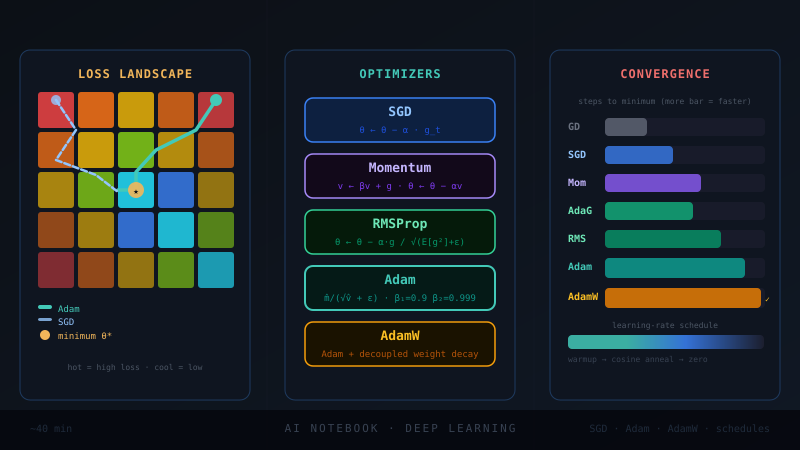

Training a neural network is a single sentence repeated billions of times: look at where you are, figure out which way is downhill, take a step. Optimizers are the entire science of that third clause — how big a step, in what direction, accounting for what history. Get it wrong and a 100-million-dollar training run diverges in the first hour. This guide builds the whole family from first principles, shows each one descending a real loss surface, and flags the exact places interviewers like to probe.
The problem everyone is solving
foundationYou have parameters \(\theta \in \mathbb{R}^d\) and a dataset of \(N\) examples. You want the \(\theta\) that minimizes the average loss:
The one tool every first-order optimizer uses is the gradient \(g=\nabla_\theta L(\theta)\): the direction of steepest ascent. So we move the other way. Everything that follows — momentum, adaptivity, bias correction — is a different answer to one question: given the gradients I've seen so far, how should I actually move?
Picture \(\theta\) as a marble on a landscape whose height is the loss. The negative gradient is the slope under the marble right now. A pure gradient step is a marble with no inertia and infinite friction — it only ever responds to the ground directly beneath it. Most "improvements" are really about giving the marble memory (momentum) or per-direction grip (adaptivity).
Two facts make this hard in deep learning, and they motivate almost every algorithm below:
1. The landscape is ill-conditioned. Curvature differs wildly across directions. A single global step size is too big for steep directions (you oscillate) and too small for flat ones (you crawl). The condition number \(\kappa=\lambda_{\max}/\lambda_{\min}\) of the Hessian can be \(10^6\)+.
2. You can't afford the true gradient. Computing \(\nabla L\) over all \(N\) examples per step is wasteful. So we estimate it from a mini-batch — fast, but noisy.
Gradient Descent
the baselineThe simplest possible rule. Compute the full gradient, step against it, repeat.
\(\eta\) is the learning rate — the single most important hyperparameter in all of deep learning. For a convex quadratic with Hessian \(H\), GD converges only if \(\eta < 2/\lambda_{\max}(H)\), and its rate is governed by the condition number: error shrinks by a factor \(\big(\frac{\kappa-1}{\kappa+1}\big)\) each step. Large \(\kappa\) ⇒ painfully slow. This single inequality is why every other optimizer exists.
\(\eta\) too small → slow. \(\eta\) too large → overshoot, oscillate, diverge. The "right" \(\eta\) is set by the steepest direction, which then starves every flatter direction. Full-batch GD is rarely used in deep learning: it's expensive per step and tends to find sharp minima that generalize worse.
Stochastic & Mini-batch SGD
the workhorseInstead of the full gradient, estimate it from a random mini-batch \(\mathcal{B}\) of \(b\) examples:
This estimate is unbiased (\(\mathbb{E}[\hat g_t]=\nabla L\)) but noisy, with variance \(\propto 1/b\). Robbins & Monro showed back in 1951[1] that as long as the step sizes satisfy \(\sum_t \eta_t=\infty\) and \(\sum_t \eta_t^2<\infty\), this noisy process still converges. Modern practice mostly uses a constant-then-decayed \(\eta\) rather than that schedule, but the principle stands.
SGD's gradient noise isn't just a cost of cheap estimation — it's an implicit regularizer. It lets the marble jiggle out of sharp, narrow minima and settle in flat ones, which empirically generalize better[15]. This is a leading explanation for why plain SGD often beats Adam on the test set even when Adam wins on the train loss[16].
# The canonical training loop. Everything fancier swaps out the optimizer.
import torch
model = MyNet()
opt = torch.optim.SGD(model.parameters(), lr=0.1) # plain SGD
for x, y in dataloader: # each batch = one noisy gradient estimate
opt.zero_grad() # clear stale grads (PyTorch accumulates!)
loss = loss_fn(model(x), y)
loss.backward() # autograd fills p.grad for every param
opt.step() # theta <- theta - lr * p.gradDrop the loop above into any model. The single most common bug: forgetting opt.zero_grad(). PyTorch accumulates gradients into .grad, so skipping it sums gradients across batches and your effective learning rate silently explodes.
Momentum
give it inertiaGive the marble mass. Accumulate an exponentially-weighted velocity of past gradients and step with that, not the raw gradient[2]:
The momentum coefficient \(\mu\) (typically 0.9) controls how much history persists. In flat directions, consecutive gradients agree and add up, so velocity grows and you accelerate. In oscillating (steep) directions, gradients flip sign each step and cancel, damping the zig-zag. That is exactly the disease SGD had.
At steady state on a constant gradient, velocity saturates at \(v_\infty = -\frac{\eta}{1-\mu}g\). So momentum's effective learning rate is \(\frac{\eta}{1-\mu}\). With \(\mu=0.9\) that's a 10× amplification. This is why you must lower \(\eta\) when you add momentum, and why "I added momentum and it diverged" almost always means the base LR is now effectively 10× too large.
opt = torch.optim.SGD(model.parameters(), lr=0.01, momentum=0.9) # Note: lr dropped 10x vs the plain-SGD example because of the eta/(1-mu) factor. # From scratch, the heavy-ball update is just two lines per parameter: v = mu * v - lr * g # accumulate velocity (EMA of -gradient) theta = theta + v # step with velocity
Nesterov Accelerated Gradient
look before you leapNesterov's twist[3]: don't measure the gradient where you are — measure it where momentum is about to take you. Evaluate the gradient at the look-ahead point \(\theta_t+\mu v_{t-1}\):
The look-ahead acts as a correction term: if the velocity is about to overshoot, the gradient at the future point already points back, so NAG brakes earlier than plain momentum. On smooth convex problems this earns the famous \(O(1/t^2)\) rate versus GD's \(O(1/t)\). In deep learning the practical gain is modest but real, and Sutskever et al.[4] showed careful momentum + good init was enough to train deep nets that were thought to need second-order methods.
Momentum is a ball rolling downhill. Nesterov is a smart ball that peeks at the slope where it's heading and slows down before it overshoots the bottom.
opt = torch.optim.SGD(model.parameters(), lr=0.01, momentum=0.9,
nesterov=True) # the only change from plain momentumAdaGrad
per-parameter ratesA completely different idea: instead of one shared \(\eta\), give every parameter its own learning rate, shrinking it for parameters that have already seen large gradients[5]. Accumulate the sum of squared gradients elementwise:
(\(\odot\) and the square are elementwise.) Frequent, large-gradient directions get damped; rare, small-gradient directions keep a large effective rate. This was a breakthrough for sparse features (NLP, recommendation) where rare features deserve big updates.
\(G_t\) is a sum that only ever grows. So the effective learning rate \(\eta/\sqrt{G_t}\) decays monotonically to zero — AdaGrad eventually stops learning, even if it hasn't converged. Great for convex/sparse problems, fatal for long deep-learning runs. RMSProp and Adam exist precisely to fix this one line.
opt = torch.optim.Adagrad(model.parameters(), lr=0.01) # G accumulates forever -> the LR you set is an *upper bound* that only decays.
RMSProp
forget the distant pastFix AdaGrad's vanishing rate by replacing the ever-growing sum with an exponential moving average (EMA) of squared gradients. Old gradients decay away, so the denominator stops growing without bound[6]:
With \(\rho\approx 0.9\), the average tracks a moving window of recent curvature. RMSProp keeps AdaGrad's per-parameter adaptivity but learns indefinitely. Famously, it was never formally published — it comes from Geoff Hinton's Coursera lecture slides, and the whole field cites a lecture[6].
It's a cheap, diagonal estimate of curvature. Dividing by it is a crude Newton step: big curvature → small step, small curvature → big step. RMSProp normalizes each direction to roughly unit progress, which is why it ploughs straight down ravines.
opt = torch.optim.RMSprop(model.parameters(), lr=0.001, alpha=0.9) # 'alpha' is the EMA decay (the rho above).
AdaDelta
delete the learning rateZeiler's AdaDelta[7] was developed alongside RMSProp to fix the same AdaGrad decay, plus a subtler complaint: in \(\eta\,g/\sqrt{G}\), the units don't match those of \(\theta\). The fix keeps a second EMA — of the squared updates — and uses its root to supply the step scale, eliminating \(\eta\) entirely:
Then \(\mathbb{E}[\Delta\theta^2]_t=\rho\,\mathbb{E}[\Delta\theta^2]_{t-1}+(1-\rho)\Delta\theta_t^2\). The ratio of two RMS quantities is dimensionless × gradient — the units now match \(\theta\). It's elegant but in practice tends to be conservative and slow to warm up, and Adam superseded it for most uses.
opt = torch.optim.Adadelta(model.parameters(), rho=0.95) # no lr needed in theory # PyTorch still exposes an lr multiplier (default 1.0) for practical control.
Adam
the default for a decadeAdam[8] is the single most consequential optimizer in modern deep learning. The idea is almost embarrassingly simple: RMSProp + momentum. Keep an EMA of the gradient (the first moment, like momentum) and an EMA of its square (the second moment, like RMSProp), then add one crucial correction.
Both \(m\) and \(v\) start at zero, so early in training they're biased toward zero — especially \(v\), with \(\beta_2=0.999\) decaying very slowly. Adam's signature move is bias correction:
Defaults that work shockingly often: \(\eta=10^{-3}\), \(\beta_1=0.9\), \(\beta_2=0.999\), \(\epsilon=10^{-8}\). Adam is scale-invariant in a useful sense: multiply all gradients by a constant and the update barely changes, because the \(\sqrt{\hat v}\) in the denominator rescales it away. That robustness is why it "just works" out of the box on architectures where SGD needs careful tuning.
At \(t=1\), \(m_1=(1-\beta_1)g_1\) — only 10% of the true gradient. \(v_1\) is even smaller relative to its target. Without correction, the first steps would be tiny in \(m\) yet the small \(v\) makes the ratio wild — training is unstable exactly when you can least afford it. The terms \(1-\beta^t\) divide out the initialization bias; they're \(\approx 1\) once \(t\) is large, so correction only matters early. If asked "what does Adam's bias correction do?" the answer is: it fixes the cold-start bias from initializing the moment estimates at zero.
PyTorch uses \(\sqrt{\hat v}+\epsilon\) (outside). It prevents division by zero and caps the maximum effective step at \(\eta/\epsilon\). Some implementations put it inside (\(\sqrt{\hat v+\epsilon}\)); the behavior differs slightly when \(\hat v\) is tiny. Knowing this distinction — and that the default \(10^{-8}\) is sometimes raised to \(10^{-4}\) for stability in large models — is a classic "do they actually read the code?" check.
Writing Adam from scratch is a beloved interview exercise. Here is the whole thing — no framework:
import numpy as np
def adam(grad_fn, theta, lr=1e-3, b1=0.9, b2=0.999, eps=1e-8, steps=1000):
m = np.zeros_like(theta) # 1st moment (EMA of g)
v = np.zeros_like(theta) # 2nd moment (EMA of g**2)
for t in range(1, steps + 1):
g = grad_fn(theta)
m = b1 * m + (1 - b1) * g
v = b2 * v + (1 - b2) * g * g
m_hat = m / (1 - b1**t) # bias correction -- the part people forget
v_hat = v / (1 - b2**t)
theta = theta - lr * m_hat / (np.sqrt(v_hat) + eps)
return theta
# In practice, just: opt = torch.optim.Adam(model.parameters(), lr=1e-3)AMSGrad
when Adam doesn't convergeReddi, Kale & Kumar[9] showed Adam can fail to converge even on simple convex problems. The culprit: because \(v_t\) is an EMA, it can shrink when a run of small gradients follows a big one, so the effective step can suddenly grow at the wrong moment and undo progress. Their fix is one line — never let the denominator decrease:
By taking a running maximum of the second moment, AMSGrad guarantees a non-increasing effective learning rate and recovers Adam's convergence proof. In practice the gain is often small — Adam with good hyperparameters usually behaves — but this is the canonical "Adam is not theoretically sound" story, and interviewers love it.
"Adam has a convergence proof, right?" — The original 2015 proof had a bug; the 2018 paper[9] exhibited an explicit counterexample where Adam converges to the worst point. AMSGrad's max over \(v_t\) is the standard fix. Bonus point: it's available as a flag, amsgrad=True, in PyTorch's Adam.
opt = torch.optim.Adam(model.parameters(), lr=1e-3, amsgrad=True)
AdamW
the one frontier labs actually useIf there is one optimizer to understand cold for a frontier-lab interview, it's AdamW[10] — the default for training essentially every modern transformer. Its entire contribution is fixing how Adam handles weight decay, and the distinction is subtle enough that it trips up most candidates.
The classic confusion: L2 regularization ≠ weight decay. For plain SGD they're identical. For adaptive optimizers they are not. With L2, you add \(\lambda\theta\) to the gradient — which then gets fed through Adam's adaptive denominator:
See the problem? The decay term \(\lambda\theta\) gets divided by \(\sqrt{\hat v}\) too. Parameters with large historical gradients (large \(\hat v\)) get their regularization weakened — the opposite of what you want. Weight decay becomes entangled with gradient magnitude. AdamW decouples them: do the Adam step, then shrink the weights separately, untouched by the adaptive scaling:
"In Adam, L2 regularization is scaled by the per-parameter adaptive learning rate, so frequently-updated weights get decayed less — coupling regularization to gradient history. AdamW applies weight decay directly to the weights, outside the adaptive update, so every parameter decays at the same rate \(\eta\lambda\) regardless of its gradient statistics. It generalizes better and decouples the LR and weight-decay hyperparameters so you can tune them independently." Nail that and you've answered one of the most common modern-optimizer questions.
# The standard recipe for training transformers today:
opt = torch.optim.AdamW(model.parameters(),
lr=3e-4, # the "Karpathy constant" for many LLMs
betas=(0.9, 0.95), # b2=0.95 common at scale (vs 0.999)
weight_decay=0.1) # decoupled -- this is real weight decay
# Pro move: never decay biases or LayerNorm/embedding gains.
decay, no_decay = [], []
for n, p in model.named_parameters():
(no_decay if p.ndim < 2 else decay).append(p) # 1D params -> no decay
opt = torch.optim.AdamW(
[{"params": decay, "weight_decay": 0.1},
{"params": no_decay, "weight_decay": 0.0}], lr=3e-4, betas=(0.9, 0.95))At LLM scale people often set \(\beta_2=0.95\) (not 0.999) for a more responsive second moment under heavy gradient noise, raise \(\epsilon\) to \(10^{-8}\)–\(10^{-5}\), and exclude 1-D parameters (biases, norms) from decay. These aren't trivia — they're the difference between a stable run and a loss spike at step 40k.
Nadam
Adam + NesterovNadam[11] does to Adam what Nesterov did to momentum: replace the plain first-moment with a look-ahead version. The update folds the next step's momentum into the current one:
The benefit mirrors NAG's — slightly faster, slightly better-damped convergence on many problems — at no extra memory cost. It's a solid default where available, though AdamW dominates the LLM world.
opt = torch.optim.NAdam(model.parameters(), lr=2e-3)
Frontier & large-batch optimizers
what's running at scaleAdamW is the workhorse, but the bleeding edge has moved on in specific directions. Know these names and the one idea behind each — they show up the moment an interview turns to "what are you excited about."
Lion — sign of the momentum
Discovered by program search rather than human design[12], Lion (EvoLved Sign Momentum) is startlingly simple and uses half the memory of Adam (it keeps only one momentum buffer, no second moment):
The \(\operatorname{sign}\) makes every update the same magnitude per coordinate — pure direction, no scale. That demands a much smaller LR (≈3–10× lower than AdamW) and larger weight decay, but it can match or beat AdamW on vision and language at lower cost.
LARS / LAMB — layer-wise rates for huge batches
When you scale batch size to tens of thousands to train faster on many GPUs, per-layer gradient norms vary enormously and training destabilizes. LARS[13] (for SGD) and LAMB[14] (its Adam-based successor) rescale each layer's update by the ratio of its weight norm to its update norm — a "trust ratio." LAMB famously cut BERT pre-training from days to 76 minutes by enabling batch sizes of 32k+.
Shampoo, Sophia, Muon — toward (cheap) second order
Adam's \(\sqrt{v}\) is a diagonal curvature approximation — it ignores interactions between parameters. The frontier of optimizer research is capturing more of the curvature without paying for the full \(d\times d\) Hessian:
Shampoo[17] keeps small preconditioner matrices per tensor dimension (a Kronecker-factored approximation of the curvature) and has powered record-setting training runs. Sophia[18] uses a light, periodically-estimated diagonal Hessian to halve the steps needed for LLM pre-training. Muon[19] orthogonalizes the momentum update for 2-D weight matrices (via a few Newton–Schulz iterations) and has become a popular, genuinely faster alternative to AdamW for the matrix parameters of transformers, often paired with AdamW on the 1-D params.
Read the whole family as climbing a curvature ladder. SGD: no curvature. Momentum: temporal smoothing. Adam/RMSProp: diagonal curvature. Shampoo/Muon/Sophia: structured, non-diagonal curvature — second-order information at a price you can actually afford. Every rung trades memory and compute for fewer, better-aimed steps.
Learning-rate schedules & the tricks that matter
half the battleThe optimizer chooses direction and per-parameter scaling; the schedule chooses the global step size over time. At scale, the schedule matters as much as the optimizer choice.
Warmup — why Adam needs it
Start \(\eta\) near zero and ramp up linearly over the first few thousand steps. The reason is precise: early on, \(\hat v_t\) is estimated from very few gradients, so its variance is huge; dividing by an unreliable \(\sqrt{\hat v}\) produces wild steps. Warmup buys time for the second-moment estimate to stabilize. (This is also the motivation behind RAdam, which derives a warmup automatically from the variance of the adaptive rate.)
Cosine decay
After warmup, anneal \(\eta\) along a half-cosine to (near) zero[20]. Large early steps explore; small late steps settle into a minimum. It's the default LLM schedule:
Linear scaling rule & gradient clipping
Double the batch size → roughly double the LR[21], because a larger batch gives a lower-variance gradient you can trust with a bigger step (holds up to a "critical batch size," then breaks). And gradient clipping — capping \(\lVert g\rVert\) to a threshold — is non-negotiable for transformers/RNNs: a single bad batch can produce an enormous gradient that blows up the run; clipping caps the damage.
opt = torch.optim.AdamW(model.parameters(), lr=3e-4, weight_decay=0.1)
warmup, total = 2000, 100_000
sched = torch.optim.lr_scheduler.SequentialLR(opt, schedulers=[
torch.optim.lr_scheduler.LinearLR(opt, 1e-3, 1.0, total_iters=warmup),
torch.optim.lr_scheduler.CosineAnnealingLR(opt, T_max=total - warmup)],
milestones=[warmup])
for step, (x, y) in enumerate(dataloader):
opt.zero_grad()
loss_fn(model(x), y).backward()
torch.nn.utils.clip_grad_norm_(model.parameters(), max_norm=1.0) # clip!
opt.step()
sched.step()The honest answer is "it depends, and here's why." On many vision benchmarks, well-tuned SGD+momentum finds flatter minima and generalizes better than Adam[16]. But for transformers/LLMs, AdamW is dominant because the loss landscape and the heavy-tailed gradient noise make adaptive methods far more stable and SGD nearly untrainable. Naming both the flat-minima argument and the transformer caveat is what separates a strong answer.
The grand race
all of them, at onceHere is the whole family released from the same starting point on the same landscape, each running its true update rule live in your browser. Switch landscapes to see how the ranking flips — there is no universally best optimizer, only best for a given surface and budget. This is the figure to keep in your head.
Reading the race: on the ravine, adaptive methods (AdaGrad, RMSProp, Adam family) drive nearly straight down while SGD zig-zags. On the saddle, methods that amplify tiny gradients escape the plateau first — and AdaDelta may barely move. On Beale, the curved valley punishes anything without adaptivity; plain SGD/momentum stall on the flat plateau while Adam & friends thread the canyon to \((3,0.5)\).
The whole family on one page
| Optimizer | Core idea | State / mem | Use it when |
|---|---|---|---|
| SGD | step against noisy gradient | none | baselines; well-tuned vision nets |
| + Momentum | EMA of gradients (inertia) | 1× | almost always over plain SGD |
| Nesterov | look-ahead gradient | 1× | slightly faster momentum |
| AdaGrad | ÷√(sum of g²), per-param | 1× | sparse features; convex |
| RMSProp | ÷√(EMA of g²) | 1× | RNNs; non-stationary objectives |
| AdaDelta | RMSProp, no LR (unit-matched) | 2× | when you can't tune LR |
| Adam | momentum + RMSProp + bias-fix | 2× | strong default everywhere |
| AMSGrad | Adam with max-of-v² denom | 2× | when Adam won't converge |
| AdamW | Adam + decoupled weight decay | 2× | training transformers / LLMs |
| Nadam | Adam + Nesterov look-ahead | 2× | drop-in faster Adam |
| Lion | sign of momentum | 1× | memory-tight large training |
| LAMB | Adam + per-layer trust ratio | 2× | batch sizes in the tens of thousands |
| Muon / Shampoo | structured (non-diagonal) curvature | >2× | frontier speed-ups on matrix params |
Interview rapid-fire
say these out loudTap each to reveal a crisp, interview-ready answer. If you can deliver these from memory, you understand optimizers better than most candidates.
Why is Adam basically "RMSProp + momentum"? What does each moment do?
The first moment \(m_t\) (EMA of \(g\)) is momentum — it smooths direction. The second moment \(v_t\) (EMA of \(g^2\)) is RMSProp — it gives a per-parameter scale from recent curvature. Adam divides the smoothed direction by the per-parameter scale, then bias-corrects both because they're initialized at zero.
What exactly does Adam's bias correction fix, and when does it stop mattering?
Initializing \(m_0=v_0=0\) biases the EMAs toward zero early on (severely for \(v\), since \(\beta_2=0.999\)). The factors \(1/(1-\beta^t)\) undo that bias. They're large at \(t=1\) and \(\to 1\) as \(t\) grows, so correction only affects the first ~hundreds/thousands of steps — exactly when instability is most dangerous.
L2 regularization vs weight decay — when are they different, and why does AdamW exist?
For plain SGD they're identical. For adaptive optimizers they differ: L2 adds \(\lambda\theta\) to the gradient, so it gets divided by \(\sqrt{\hat v}\) — weights with large gradients get decayed less. AdamW applies decay directly to the weights, outside the adaptive step, so every parameter decays uniformly. Result: better generalization and independently-tunable LR and decay.
What's momentum's "effective learning rate," and why must you lower lr when adding it?
On a steady gradient, velocity saturates at \(\eta/(1-\mu)\) times the gradient. With \(\mu=0.9\) that's 10× the base rate. So a base \(\eta\) that was fine for plain SGD is effectively 10× too big once momentum is on — hence the divergence people see.
Why does Adam often need learning-rate warmup?
Early in training, \(\hat v_t\) is built from very few gradients and has high variance. Dividing by an unreliable \(\sqrt{\hat v}\) yields erratic, sometimes huge steps. Warmup ramps \(\eta\) up gradually so the second-moment estimate stabilizes before steps get large. (RAdam derives this warmup analytically.)
Does Adam always converge? What's AMSGrad?
No — the 2018 "On the Convergence of Adam and Beyond" paper gave a convex counterexample where Adam diverges, because the EMA \(v_t\) can shrink and let the effective step grow at the wrong time. AMSGrad fixes it by using \(\max(v_{t-1}, v_t)\) so the denominator never decreases, restoring convergence guarantees.
Why does SGD sometimes generalize better than Adam?
SGD's isotropic gradient noise biases it toward flat minima, which tend to generalize better; Adam's adaptive scaling can settle into sharper minima with lower train loss but worse test loss. This holds on many vision tasks. For transformers, the argument flips in practice — AdamW is far more stable on their heavy-tailed gradients, and SGD is nearly untrainable there.
What are saddle points, and why do they matter more than local minima?
In high dimensions, critical points are overwhelmingly saddles (some directions up, some down), not minima — a local min requires every eigenvalue positive, which is exponentially unlikely. Near a saddle the gradient vanishes, so plain SGD crawls. Adaptive methods amplify the tiny gradient (÷ small \(\sqrt{\hat v}\)) and momentum builds speed, so both escape faster.
Why don't we just use second-order (Newton) methods?
Newton's step needs the Hessian inverse — \(O(d^2)\) memory and \(O(d^3)\) compute for \(d\) up to billions: impossible. Adam's \(\sqrt{v}\) is a cheap diagonal curvature proxy. Shampoo, K-FAC, Sophia, and Muon are the active research direction: capture structured, non-diagonal curvature at a tractable cost.
How should learning rate scale with batch size?
The linear scaling rule: multiply LR by the same factor you multiply batch size (a bigger batch = lower-variance gradient you can trust further), combined with warmup. It holds up to a critical batch size; beyond that, returns diminish and you must tune empirically.
Write Adam in five lines.
\(m\leftarrow\beta_1 m+(1-\beta_1)g\); \(\;v\leftarrow\beta_2 v+(1-\beta_2)g^2\); \(\;\hat m=m/(1-\beta_1^t)\); \(\;\hat v=v/(1-\beta_2^t)\); \(\;\theta\leftarrow\theta-\eta\,\hat m/(\sqrt{\hat v}+\epsilon)\). If you can also state the defaults (1e-3, 0.9, 0.999, 1e-8) you're done.
References
- [1] Robbins & Monro (1951). A Stochastic Approximation Method. Ann. Math. Stat.
- [2] Polyak (1964). Some methods of speeding up the convergence of iteration methods (heavy-ball momentum).
- [3] Nesterov (1983). A method for solving the convex programming problem with rate O(1/k²).
- [4] Sutskever, Martens, Dahl & Hinton (2013). On the importance of initialization and momentum in deep learning. ICML.
- [5] Duchi, Hazan & Singer (2011). Adaptive Subgradient Methods (AdaGrad). JMLR.
- [6] Tieleman & Hinton (2012). RMSProp. Coursera "Neural Networks for ML," Lecture 6e.
- [7] Zeiler (2012). ADADELTA: An Adaptive Learning Rate Method. arXiv:1212.5701.
- [8] Kingma & Ba (2015). Adam: A Method for Stochastic Optimization. ICLR.
- [9] Reddi, Kale & Kumar (2018). On the Convergence of Adam and Beyond (AMSGrad). ICLR.
- [10] Loshchilov & Hutter (2019). Decoupled Weight Decay Regularization (AdamW). ICLR.
- [11] Dozat (2016). Incorporating Nesterov Momentum into Adam (Nadam). ICLR Workshop.
- [12] Chen et al. (2023). Symbolic Discovery of Optimization Algorithms (Lion). NeurIPS.
- [13] You, Gitman & Ginsburg (2017). Large Batch Training of CNNs (LARS). arXiv:1708.03888.
- [14] You et al. (2020). Large Batch Optimization for Deep Learning (LAMB). ICLR.
- [15] Keskar et al. (2017). On Large-Batch Training... Sharp vs Flat Minima. ICLR.
- [16] Wilson et al. (2017). The Marginal Value of Adaptive Gradient Methods. NeurIPS.
- [17] Gupta, Koren & Singer (2018). Shampoo: Preconditioned Stochastic Tensor Optimization. ICML.
- [18] Liu et al. (2023). Sophia: A Scalable Stochastic Second-order Optimizer. arXiv:2305.14342.
- [19] Jordan et al. (2024). Muon: an optimizer for the hidden layers of neural networks.
- [20] Loshchilov & Hutter (2017). SGDR: Stochastic Gradient Descent with Warm Restarts (cosine). ICLR.
- [21] Goyal et al. (2017). Accurate, Large Minibatch SGD (linear scaling + warmup). arXiv:1706.02677.
Dates and venues are given from memory of the literature; verify exact citations against the original papers when you submit work. The animations implement each method's published update rule with hyperparameters tuned per landscape for legibility, not to declare a "winner."